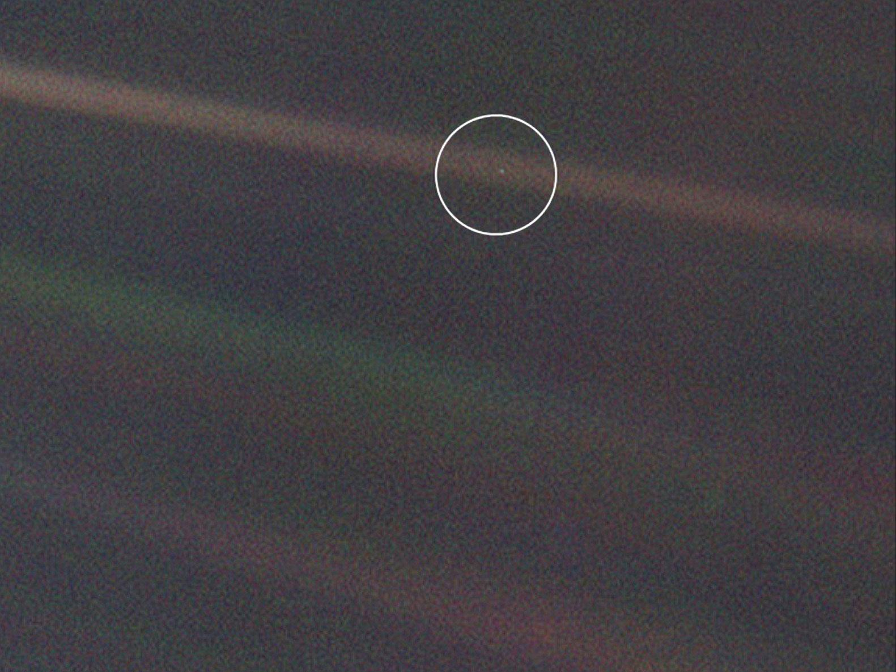

2018-07-25
Pliny the Elder was a first century Roman author known mostly for his final work Natural History, possibly the most popular encyclopedia in Europe for 1500 years. Among classicists, he is also regarded as one of the worst stylists of the classical Latin canon1:
In truth Pliny had neither literary skill nor sense of propriety, and he failed to discipline his thoughts. The ornaments he parades differ somewhat from those employed by his contemporaries, mainly because they are more crude. He can be florid in the extreme, accumulating vacuous phrases, and he turns out epigrams of exceptional extravagance and insipidity.
Popular science writing apparently hasn't changed very much.
Something that is sometimes overlooked is Pliny's social criticism. He will, at the slightest hint of opportunity, use the discussion of some specialist topic like metallurgy or botany to start complaining about societal pathologies (real or perceived). Pliny saw the rise and consequences of economic globalization and material abundance, a republican government corrupted by monetary interests and increasingly by centralized executive authority, an environment ravaged and exploited to fuel consumerism, and a decline of interest in scholarship for the sake of knowledge. It's important not to overstate the similarity between Pliny's world and our own. In our time, slavery and infanticide are no longer practiced in most of the world (at least not openly). Still, when reading Pliny I'm often struck by how familiar his polemics can be. With that said, not taking any of this too seriously, I've collected and lightly edited a few of Pliny's more relatable passages.
To open with a light subject, Pliny discusses the nefarious use of technology by the military-industrial complex2:
Iron is the best and worst of life’s materials. With iron we plough the ground, plant trees, trim other trees that support our vines, and compel the vines to put out new shoots by cutting out dead wood every year. With it we build houses, quarry rocks and achieve many other useful tasks. But we also use iron for wars and bloodshed and plunder. We use it not only at close quarters, but as winged missiles. Once iron projectiles were hurled by the arm, but now they are actually equipped with wings! This I consider to be the most criminal misuse of man’s genius: to make it possible for death to reach human beings more quickly, we have taught iron how to fly and have given it wings!
Pliny explains how the attention economy (currently being exploited by advertising companies) has its roots not in the smart phone, but in papyrus3:
The Greeks have a wonderful flair for inventing titles for books. They called one Honeycomb; others called their works Violets, Muses, Encyclopedias, Manuals, Meadow, Plague, Impromptu–eye-catching titles that might cause a man to jump bail. But when you dip inside what emptiness awaits you!
Pliny seems to regard alcohol as one of life's great evils4:
Careful investigation reveals that no activity takes up more of a man’s life than producing alcoholic beverages, as if Nature had not given us a perfectly healthy liquid to drink–namely, water–of which all other animals avail themselves! ... All this toil and effort is the price paid for something that alters men’s minds and produces madness. Because of the drink thousands of crimes have been committed, and drinking occasions so much pleasure that a huge section of mankind knows no other reward in life.
He's particularly disturbed by drinking competitions and drinking games5:
Alcohol is drunk as a result of debauchery, and drunkenness is even promoted by the offer of a prize and—heaven help us!–is actually purchased. One man get a prize if he eats as much as he drinks. Another drinks as many cups as a throw of the dice demands.
As always, he speaks about social pathology with his characteristic subtlety6:
Even in the most favourable circumstances the intoxicated never see the sunrise and so shorten their lives. This is the reason for pale faces, hanging jowls, sore eyes and trembling hands that spill the contents of full vessels; this the reason for swift retribution consisting of horrendous nightmares and for restless lust and pleasure in excess. The morning after, the breath reeks of the bottle and everything is forgotten–the memory is dead. This is what people call ‘enjoying life’; but while other men daily lose their yesterdays, these people also lose their tomorrows.
The nice people at Russian River Brewery have done Pliny the honor of naming a beer after him7. I assume it's an oversight on their part that they don't have his thoughts on beer (and alcohol in general) printed on every bottle8:
Western people also have their own liquor made from grain soaked in water. Alas, what wonderful ingenuity vice possesses! We have even discovered how to make water intoxicating!
Pliny is concerned about food not being bland enough9:
It is amazing that pepper is so popular. Some substances attract by their sweetness, others by their appearance, yet pepper has neither fruit nor berries to commend it. Its only attraction is its bitter flavour, and to think we travel to India for it! Who was the first man willing to try this on his food, who, because of his greedy appetite, was not content merely to be hungry?
He has enough flavor without added spices.
Pliny takes issue with his society's desire for luxury, pointing to the quarrying of mountains and drinks cooled by ice10:
We quarry mountains and drag them off solely for our pleasure – mountains that we once considered it a remarkable feat even to have crossed. ... Now these same mountains are quarried for a thousand types of marble. Promontories are opened up to the sea, Nature is levelled. We carry off materials which were meant as barriers between nations; ships are built to transport the marble. Thus mountain-ranges are carried here and there over the waves, Nature’s wildest domain. Nevertheless we have a better excuse for this than we have for climbing to the clouds in search of vessels in which to keep drinks cold and for hollowing out rocks that approach heaven so that we may drink from ice.
Moreover, with the globalized economy of the late first century one could at least import high quality sand from Africa11 and iron and textiles from China12. Such wonders.
He doesn't seem to care for jewelry13:
Yet so that what she suffers on her surface, her outermost skin, may seem bearable by comparison, we penetrate her inmost parts, digging into her veins of gold and silver and deposits of copper and lead. We search for gems and certain very small stones by sinking shafts into the depths. We drag out Earth’s entrails; we seek a jewel to wear on a finger. How many hands are worn by toil so that one knuckle may shine! If there were any beings in the nether world, assuredly the tunnelling brought about by greed and luxury would have dug them up.
Pliny would probably not approve of Deadliest Catch14:
But why do I mention these trivial matters when shellfish are the prime cause of the decline of morals and the adoption of an extravagant life-style? Indeed, of the whole realm of Nature the sea is in many ways the most harmful to the stomach, with its great variety of dishes and tasty fish. But the foregoing pale into insignificance beside the purple-fish, purple robes and pearls. As if it were not enough for the produce of the seas to be stuffed down our throats, it is also worn on the hands, in the ears, on the head and all over the body of women and men alike! What has the sea to do with clothing, the waters and waves to do with wool? The sea receives us in a proper way only when we are without clothes. There may well be a strong alliance between the sea and our stomach, but what connection is there with our backs? Are we not satisfied by feeding on dangerous things without also being clothed by them? Do we get most bodily pleasure from luxuries that cost human life?
Interestingly enough, this dye may have lead to the death of Ptolemy of Mauretania, the grandson of Cleopatra and Marc Antony. Supposedly, Ptolemy visited his cousin Emperor Caligula in Rome wearing a purple robe that was very well received; so much so that Caligula had him sentenced to death soon after out of jealousy.
Pliny is happy that there are at least regulations protecting the environment of Italy15:
Such is Italy, sacred to the gods, these are its races and the towns of its peoples. She yields place to no country in the abundance of her mineral-bearing ores; but their exploitation is forbidden by an old decree of the Senate relating to the conservation of Italy.
Fortunately, "all Spain is rich in lead, iron, copper, silver and gold mines"16, so they don't have to go without. It is wonderful to reap the rewards of resource extraction without paying the costs. Rome had Spain, now there is the developing world.
His position is unsurprising17:
Man is the only animal whose first experience of mating is accompanied by regret; this is indeed an augury for life derived from a regrettable origin. All other animals have fixed seasons during the year for mating, but man, as has been stated, has intercourse at any hour of the day or night. All other animals derive satisfaction from having mated; man gets almost none.
Pliny thinks greed might have negative effects on the integrity of civil society18:
The expansion of the world and the growing extent of our resources proved harmful to subsequent generations. Senators and judges began to be chosen by wealth, and wealth was the only embellishment of magistrates and commanders; lack of children began to exert the highest influence and power, and legacy-hunting was the most profitable occupation. ... Obsequiousness began to be the sole means of advancement. Different men worshipped greed in different ways and different contexts, although every man's prayer had the same goal – namely, the acquisition of material possessions. Everywhere even distinguished people preferred to cultivate others’ vices rather than their own good qualities. The result is, I declare, that pleasure has begun to live, while life itself has come to an end.
He is concerned about the presence of a profit motive in life or death situations, but seems to appreciate the role of market competition in reducing prices19:
Previous generations rejected not medicine but rather the medical profession, mainly because they refused to ransom their lives with doctors’ fees. ... Let us not indict the greed of doctors, their financial rapacity in dealing with patients whose life is in the balance, the fees charged for curing ailments, the payments on account that lead to death, and the secret instructions to ease aside a cataract rather than remove it completely. In the final analysis, the large number of sharks using medical practice to prey on people seems to be the best thing about the situation, in that competition between rivals – rather than any sense of decency – reduces fees.
He also expresses concerns about how people are willing to put their health in the hands of authorities who use specialized jargon20:
Indeed no authority has any weight unless he researches and publishes on medical matters in Greek – even in the eyes of laymen and those with no knowledge of Greek. Where their health is concerned, people have less faith if they understand what is written. So, here indeed is a phenomenon unique among the sciences; anyone claiming to be a doctor is immediately trusted, although in no other profession is an untruth more dangerous.
Pliny makes a point of how dangerous this is without strict malpractice law21:
But this we choose to ignore, so enticing is the pleasure each one of us derives from wishful thinking. Moreover, culpable ignorance is not punishable by law; there is no precedent for retribution. Doctors learn by exposing us to risks, and conduct experiments at the expense of our lives. Only a doctor can kill a man with impunity. Indeed the blame is transferred to the deceased, who is criticized for want of moderation, and it is thus the dead who are censured.
He's annoyed by doctors accidentally prescribing the wrong drug, unknowingly poisoning their patients22:
No human intellect could have been so subtle! It is sheer medical exhibitionism and an outrageous boast on the part of science – not even the doctors themselves know these things. I have learned that through ignorance of names, red lead is commonly added to medicines instead of Indian cinnabar. This is a poison.
In his opinion, evidence-based medicine has given way to empty academic speculation23:
The remedies that I record were used by people of old – when, in a way, Nature herself made medicine – and they endured a long time. Gradually, however, experience, the most effective teacher of all things – especially in the field of medicine – gave way to words and hot air. For people find it more agreeable to sit listening in lecture theatres than to go out into lonely places searching for different plants at the appropriate season.
Pliny is (surprisingly) concerned about the physical and moral effects of misguided obsession with health. (He also thinks Brazillian waxes are morally corrupting)24:
These matters concern the health of individuals; but it was what Cato feared and foresaw – though much less deleterious and of less account, as the leading lights of medicine themselves admit – that destroyed the moral fibre of society. I refer to treatments we undergo when in good health, namely, ... the potions taken during fasts, followed by vomitings and yet larger potions; the effeminate removal of hair through the use of resins, and, likewise, women’s pudenda exposed for all to see thanks to depilatories.
Pliny has a strong interest in crystals from a mineralogical perspective, but has no patience for crystal-healers25:
I shall, incidentally, refute the unspeakable lies of the magic-doctors, who have made several assertions about gems, from the seductive pretence of their efficacy as alternative medicine to their supernatural qualities.
He's frustrated by the way that legitimate herbal medicine has been undermined by charlatans26:
Above all, untrustworthy magic practices helped Asclepiades. These were current to such an extent that they were able to destroy confidence in all herbs.
Pliny's believes a lot can be accomplished through a combination of exercise and going outside27:
It would not be proper for me to omit remedies that depend on man’s will-power. Fasting from all food and drink, sometimes abstaining from baths, when health demands one of these courses of action, are all considered among the most efficacious remedies. Among other remedies are physical exertion, voice exercises, anointing and massage, if done skilfully: for violent massage hardens the body, while gentle massage softens it; and too much massage reduces the body, while a moderate amount builds it up. Of special benefit are walking, carriage-rides of various kinds, and horse-riding, which is good for the stomach and hips. ... Sunshine is the best of the self-administered remedies
Pliny lives in an upsetting world, but he takes solace in the fact that people have a convenient way out. He could have been a very successful SoundCloud rapper28:
Indeed Earth may be credited with having invented even poisons out of pity for us, lest, when we are tired of life, starvation, a death most out of keeping with earth’s benefits, should destroy us by a slow wasting-away; lest precipices should scatter our lacerated body; lest the perverted punishment of the noose that imprisons the breath of life it seeks to extinguish should torture us; lest, if we seek death in the depths, our burial should serve as fodder; lest the torture of iron should rend our body. Thus Earth, out of pity for us, has produced a substance–a very easy draught–by drinking which, like thirsty men, we may effortlessly deprive ourselves of life without physical injury or loss of blood, in such a way that no birds or beasts should touch us when dead and that those who have killed themselves should be preserved for the earth.
Pondering the implications of astronomy can often lead one to recognize the futility of human wars and conflict29:
Let all these portions be taken away from the earth, or rather this dot in the universe, as the majority of savants have taught–for this is all the earth is in the context of the whole universe–and this then is the substance of our glory, this is its home, here we fill positions of power and here we covet wealth and put mankind into a turmoil repeatedly and fight wars–even civil wars–and empty the land by killing one another. To sum up the outward madness of nations, this is the land in which we drive out our neighbours and dig up and steal their turf to add to our own, so that he who has marked his acres most widely and driven off his neighbours may rejoice in possessing an infinitesimal part of the earth.
Compare this to Sagan's "Pale Blue Dot"30:
The Earth is a very small stage in a vast cosmic arena. Think of the endless cruelties visited by the inhabitants of one corner of this pixel on the scarcely distinguishable inhabitants of some other corner, how frequent their misunderstandings, how eager they are to kill one another, how fervent their hatreds. Think of the rivers of blood spilled by all those generals and emperors so that, in glory and triumph, they could become the momentary masters of a fraction of a dot.
It seems some perspectives are timeless.

Book XXXIV, 138
Preface, 23
Book XIV, 137
Book XIV, 140
Book XIV, 142
Book XIV, 149
I have sometimes heard Pliny the Elder brought up in conversation only to be disappointed. On one occasion someone asked me where they could find Pliny the Elder. I hadn't heard of the beer and tried to direct the person to a book store (we were both very confused).
Book XII, 29
Book XXXVI, 1-2
Book XXXVI, 51
Book XXXIV, 145
Book II, 158
Book IX, 105
Book III, 138
Book III, 30
Book X, 171
Book XIV, 5
Book XXIX, 16 & 21
Book XXIX, 17
Book XXIX, 18
Book XXIX, 25
Book XXVI, 10
Book XXIX, 26
Book XXVII, 54
Book XXVI, 18
Book XXVII, 53-55
Book II, 156
Book II, 174